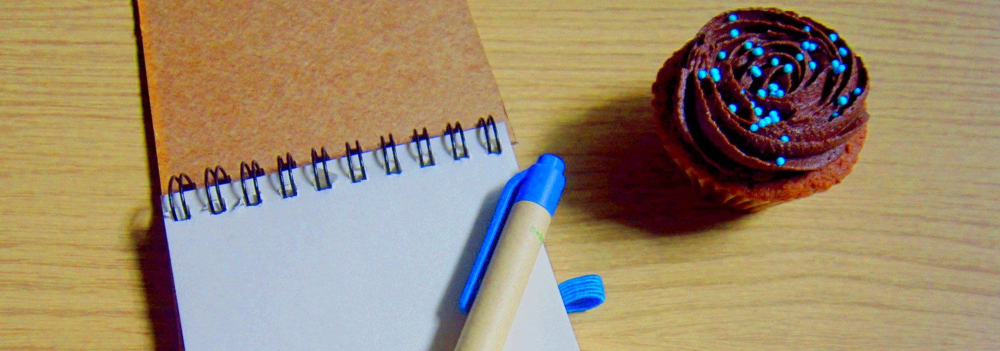

Странност: едничкото правило за по- добро редактиране
Има само едно нещо, което трябва да знаем, за да подобрим редакторските си умения в пъти.
То е, че текстът трябва да ни се струва непознат.
Прекарали сте час в писането на един имейл или доклад, и очите ви се плъзгат по повърхността. Ето как да се борим с това състояние.
Най- лесно е да се върнем по- късно към текста
Но, имаме срокове. Разбира се, не на всеки текст може и трябва да отделяме допълнително време. Понякога просто няма лошо да отговаряме бързо или да сглобим някакъв документ. Но ако става въпрос за нещо важно- нов клиент или проект, който води до възможно повишение, е задължително да прегледаме поне още веднъж написаното.
Да сменим размера, шрифта... или цвета
Увеличим ли размера или шрифта на текста, изведнъж думите стават отново сбор от знаци. При някои шрифтове някои букви може да си приличат много като например "н" и "м", а тъй като двете са една до друга на клавиатурата объркването е лесно. Добър съвет, ако сте писали уморени или бързо!
Пробвайте и да смените цвета на текста. Използвайте топлите цветове (като червено) за да забързате темпото на редактиране, но тогава повече внимавайте за грешки. Използвайте студени цветове (като синьо) когато искате да прекарате повече време с идеята, тъй като те създават по- спокойна и съзерцателна настройка.
Отгоре- надолу
Почнете да четете текста си от последния ред или абзац: полезно за хващане на правописни грешки, повтарящи се предлози, препинателни знаци. Това не помага много там, където логиката е линейна, но пак може да пробваме да видим дали смисълът на параграфа се запазва, защото правилото обикновенно е, че един параграф е една (мини) идея, което е добра практика за разбиване на текста.
Четене на глас
Всеки текст си има ритъм. Кратките изречения летят. Темпо. Шемет. Вълнения. А дългите изречения напротив- приканват към по- задълбочена мисъл. Разбира се, най- добре е да има разнообразие. Черно на бяло това е трудно забележимо, но ако тръгнем да четем на глас написаното ще заловим всички неумели фрази, скучни части и неясноти.
Отпечатане на хартия
Четенето на екран е чудесно нещо, защото нямаме ограничения, а и не се хаби хартия. Но онлайн няма полета, в които да си записваме идеи, корекции и пояснения. Ще се изненадате до какви прозрения може да доведе, ако седнете с лист и химикал, да четете произведението си.
Две глави редактират по- добре от една
Колкото и да се стараем, няма да може да забележим всички грешки. Дори отпечатани книги, които са минали през ръцете на агенти, коректори и т.н. имат по някой сбъркан правопис. И все пак две глави мислят по- добре от една. Така че защо да не помолим колега или близък да хвърли поглед на написаното. Може и те да се нуждаят от такава помощ в бъдеще, така че всички печелят.
БОНУС: Четене като робот
Освен, че ще ви накара да сте по- прецизни, четенето на текста ви с роботски глас може да ви разкрие, че звучите грубо или лаконично. Понеже написаното звучи в главата ни с подходящия тон не се замисляме, че друг може да го възприеме иначе.